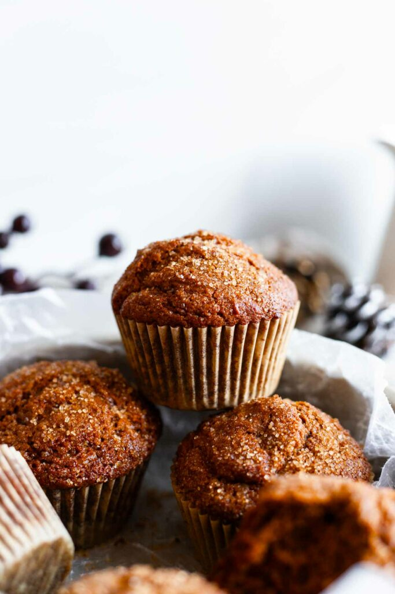

Honey's Spiced Molasses Gingerbread Muffins
A comfy recipe that my boyfriend and I make together.

Equiptment:
Ingredients:
- 1 cup (125g) all-purpose flour
- 1/2 teaspoon baking soda
- 3/4 teaspoon ground ginger
- 1/2 teaspoon ground cinnamon
- 1/4 teaspoon ground nutmeg
- 1/4 teaspoon ground cloves
- 1/4 teaspoon salt
- 1/3 cup (80 ml) molasses (unsulphured, dark, or blackstrap all work, depending on your sweetness preference)
- 1/4 cup (56g) unsalted butter (4 Tbsp; can substitute with a neutral oil)
- 1/4 cup (56g) plain Greek yogurt (or sour cream or plant-based yogurt)
- 1/4 cup (60 ml) milk, water, or coffee (non-dairy milk works too)
- 2 Tablespoons (25g) brown sugar, packed
- 1/2 Tablespoon apple cider vinegar (or white vinegar)
- 1/2 teaspoon vanilla extract
- 1 Tablespoon (12g) turbinado or granulated sugar (optional, for sprinkling on top)
Instructions:
- Preheat the oven to 375°F (190°C). Line or grease every other cup of a 12-cup muffin tin (recipe makes 6 muffins; using every other cup creates better air flow and taller muffins).
- In a medium bowl, whisk together dry ingredients: flour, baking soda, ginger, cinnamon, nutmeg, cloves, and salt. Set aside.
- In a large microwave-safe bowl, melt the butter and molasses together in 20-second increments. Once melted, whisk in the Greek yogurt, liquid of choice (dairy or non-dairy milk, water, or coffee all work well), brown sugar, vinegar, and vanilla extract until smooth.
- Add the dry ingredients to the bowl with the wet and stir together with a rubber spatula until a batter forms. Stir until just incorporated and no flour lumps remain; do not overmix. Batter will be thick and you may notice some foaming – that's the baking soda and vinegar reacting!
- Optional: Let batter sit at room temperature for 15-20 minutes before scooping for tallest muffins.
- Spoon the batter equally into the 6 muffin cups. Top each with a generous sprinkle of turbinado or granulated sugar.
- Bake for 375°F (190°C) for 18-20 minutes until domed and set. A toothpick inserted in the center should come out clean or with just a couple crumbs attached.
- Let cool for a few minutes and enjoy!
Notes:
- Make it gluten free: substitute an equal volume (1 cup) or equal weight (125g) of a gluten-free all-purpose flour mix that contains xanthan gum. I tested and like Bob’s Red Mill Gluten Free 1:1 Baking Flour.
Original Recipe
Go Back